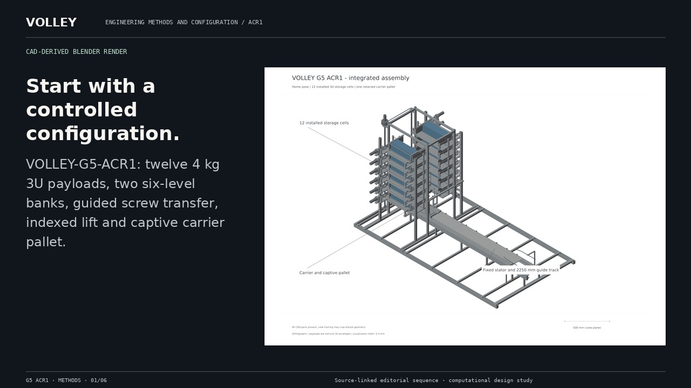
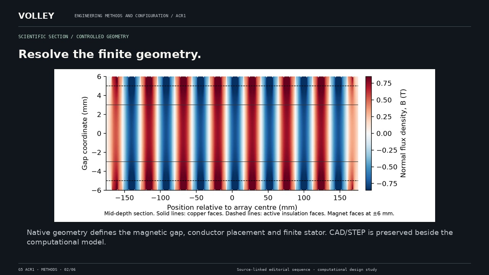
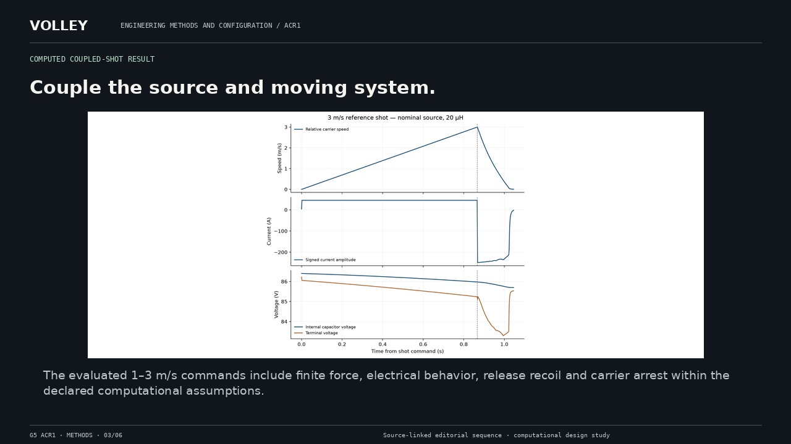
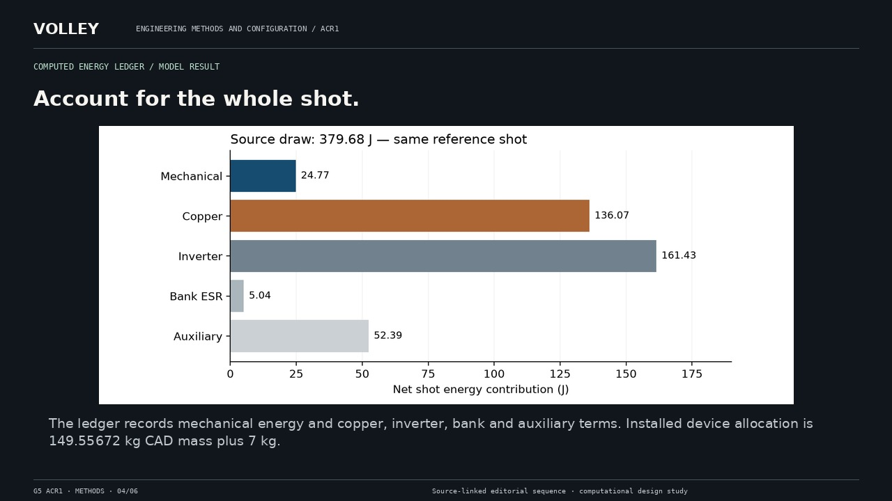
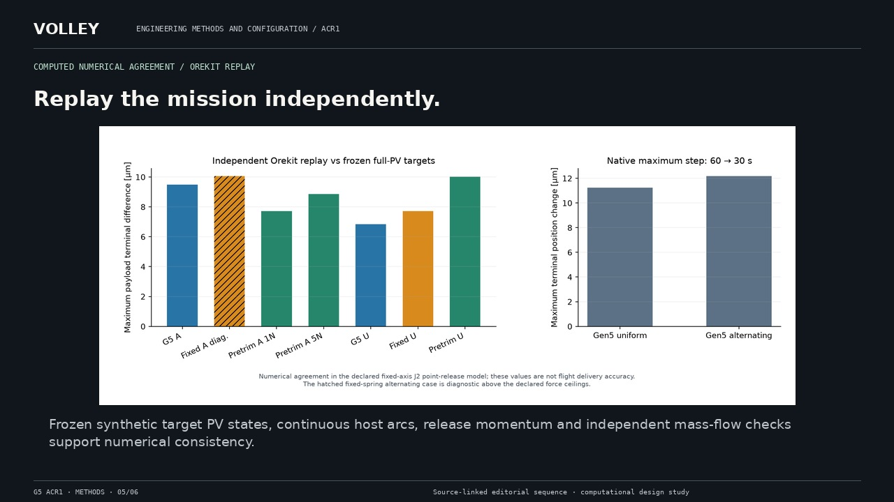
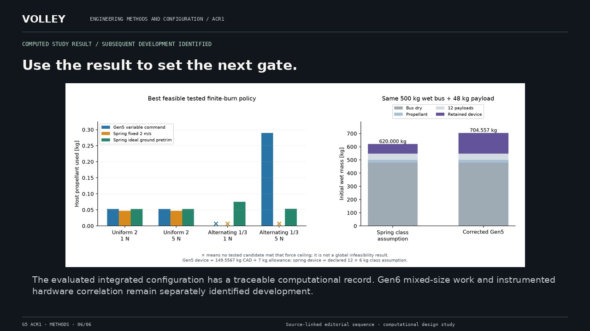

Geometry. Models. Results.
A complete still alternative to video. The original full-resolution scientific figures and CAD view provenance remain available in the asset register.
Return to film · Read complete transcript


VOLLEY-G5-ACR1: twelve 4 kg 3U payloads, two six-level banks, guided screw transfer, indexed lift and captive carrier pallet.
CAD-derived Blender render

Native geometry defines the magnetic gap, conductor placement and finite stator. CAD/STEP is preserved beside the computational model.
Scientific section / controlled geometry

The evaluated 1–3 m/s commands include finite force, electrical behavior, release recoil and carrier arrest within the declared computational assumptions.
Computed coupled-shot result

The ledger records mechanical energy and copper, inverter, bank and auxiliary terms. Installed device allocation is 149.55672 kg CAD mass plus 7 kg.
Computed energy ledger / model result

Frozen synthetic target PV states, continuous host arcs, release momentum and independent mass-flow checks support numerical consistency.
Computed numerical agreement / Orekit replay

The evaluated integrated configuration has a traceable computational record. Gen6 mixed-size work and instrumented hardware correlation remain separately identified development.
Computed study result / subsequent development identified